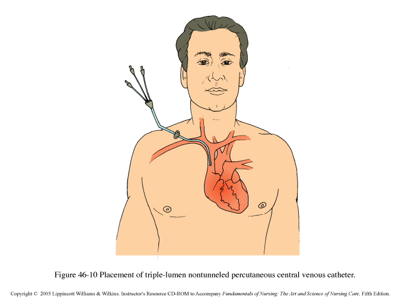

Checklists
A path to mistake-free development and publishing
Presentation Intro Checklist
Just kidding.
Checklists: Boring
Checklists will NOT:
- Remember everything for you
- Replace your experience
- Know things you don’t
- Take skill out of work
- Make you a robot
- Enforce
- Document everything
- Make you competent by using them
Central lines
After enforcing the checklist
- 43 infections prevented
- 2 million dollars in costs saved
- 8 deaths prevented
- ... over a year at a single hospital.
Across the state of Michigan, over 18 months, $175 million and 1,500 lives saved.
Recognizing complexity
- Changing environment
- Changing problems
Managing complexity
- Specializations
- Teamwork
- Testing
- Systems of preparation
Let's talk about airplanes
Checklists:
- Worry about the tedious things so you don't have to
- Check assumptions
- Suggest next steps
- Memorialize mistakes to prevent their repeat
- Check and balance hierarchy and group think
The net benefit is they reduce errors.
Doing Checklists Wrong:
- Remember everything for you
- Document everything
- Replace your experience
- Enforce
- Expect them to "Just work"
Checklists are a tool to be wielded with skill.
Two parts
Very different. Both very important.
- Task Reminders
- Needs for Communication
Checklist: Deploy updates to a mission critical site.
We have checklists for
- Copywriting
- Code quality
- Font serving libraries
- Specific plugins that have front- or back-end implications
- Integrating Mailchimp
- Publishing
- Onboarding clients
- Onboarding team members
- Always adding more
Lessons Learned
- Automate
- Standards are proto-checklists
- Make everything close
- Reflect on everything
- Enforce
Questions?
Matthew Eppelsheimer
matthew@rocketlift.com
@mattepp
License

This work is licensed under a Creative Commons Attribution-ShareAlike 4.0 International License.